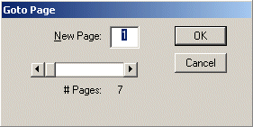

| Document Viewer Users Guide |
| GotoPage Dialog Box |
| This dialog box is used to select a page to view. Enter the desired page number in the New Page window or move the scroll bar until the desired page number appears in the New Page window. |
|  |
| Back to Users Guide Main Page | Close This Window |